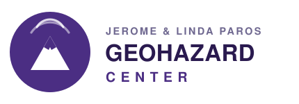

GAIA HazLab is built on complementary investments — from the seed that launched the idea, to the federal award now driving it, to the philanthropy and programs that anchor its flagship applications.
The core of GAIA is supported by NSF's Cyberinfrastructure for Sustained Scientific Innovation (CSSI) program under collaborative awards OAC‑2608509, 2608510, and 2608511, “Frameworks: Geophysical AI-driven Integration & Assimilation (GAIA).” It develops open, agentic cyberinfrastructure for real-time, physics-aware geophysical data assimilation and multi-hazard prediction across Cascadia and Alaska. View the award →
GAIA started as a seed effort supported by the Fund for Future Science and Technology (FFST) through UW CRESST, which funded the early prototypes, community building, and proof-of-concept that matured into the CSSI project. Read the seed proposal →
Wildfire-driven geohazards in GAIA are advanced through CAIG / FAIM-WG, led by PI Erkan Istanbulluoglu. This effort studies post-fire debris flows and connects land-surface and geomorphic modeling of fire-altered landscapes to GAIA's multi-hazard framework.

The Jerome and Linda Paros Geohazard Center supports GAIA's Mount Rainier flagship — integrating dense geophysical and geodetic observation with real-time hazard modeling at one of the Pacific Northwest's highest-risk volcanoes.
Any opinions, findings, and conclusions or recommendations expressed in this material are those of the author(s) and do not necessarily reflect the views of the National Science Foundation.